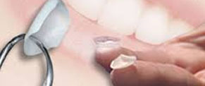

LUMINEERS™ by CERINATE® are thin ceramic veneer restorations, made of patented Cerinate porcelain, with little or no tooth preparations ahead.
LUMINEERS™ by CERINATE® are porcelain veneers that offer a painless way to permanently whiter and perfectly aligned smile. LUMINEERS™ dentist apply these contact lens-thin ‘smile shapers’ to teeth without any grinding or shaving, transforming teeth into a naturally beautiful smile. LUMINEERS can also be placed over existing crown or bridge work without having to replace them.
LUMINEERS™ are thin as contact lens and are placed over existing teeth without having to remove painful tooth structure (unlike traditional veneers.) LUMINEERS™ is a painless, permanent cosmetic solution for stained, chipped, discoloured, misaligned or spaced teeth. An on-going study has proven that they last for up to 20 years! (results available upon request). This technology is also available in Indian hospitals.
LUMINEERS™ has invented a porcelain technology that preserves your natural tooth structure, and you can correct a wide variety of unsightly dental distortions or conditions, such as :
- Tooth discolouration
- Noticeable gaps
- Permanent stains
- Broken or misshaped teeth
-
LUMINEERS can even bond to existing crowns and bridgework without having to replace them
LUMINEERS are applied with a revolutionary procedure.
No drilling of sensitive flesh, No shots or pain
- No removal of sensitive tooth structure
- Safe for sensitive patients
- Two easy dentist visits
- Clinically proven to last over 20 years
- Instant whitening that lasts
- Extraordinarily strong
- No sensitivity afterwards
- No uncomfortable temporaries
- Completely reversible